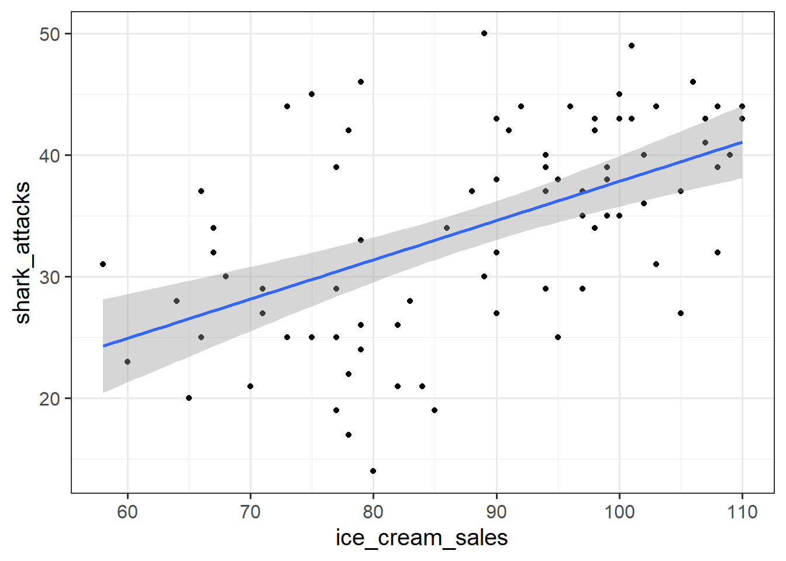
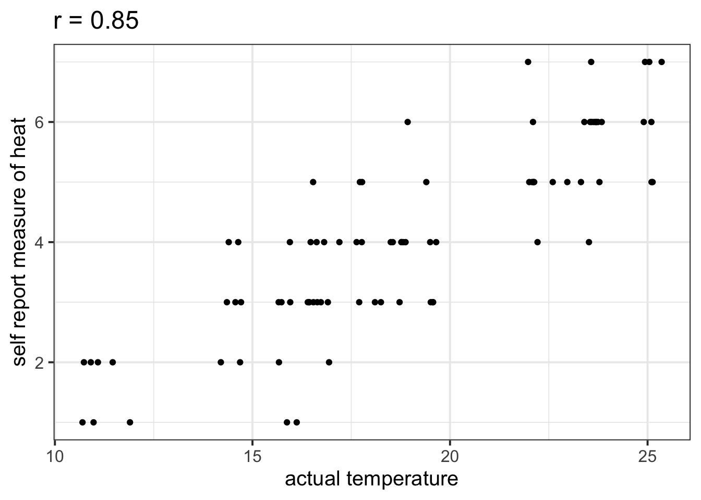

Incremental validity - A caution
Prelude
A common goal for researchers is to determine which variables matter (and which do not) in contributing to some outcome variable. A common approach to answer such questions is to consider whether some variable \(X\)’s contribution remains significant after controlling for variables \(Z\).
The reasoning:
- If our measure of \(X\) correlates significantly with outcome \(Y\) even when controlling for our measure of \(Z\), then \(X\) contributes to \(y\) over and above the contribution of \(Z\).
In multiple regression, we might fit the model \(Y = \beta_0 + \beta_1 \cdot X + \beta_2 \cdot Z + \epsilon\) and conclude that \(X\) is a useful predictor of \(Y\) over and above \(Z\) based on the estimate \(\hat \beta_1\), or via model comparison between that model and the model without \(Z\) as a predictor (\(Y = \beta_0 + \beta_1 \cdot X + \epsilon\)).
Toy Example
Suppose we have monthly data over a seven year period which captures the number of shark attacks on swimmers each month, and the number of ice-creams sold by beach vendors each month.
Consider the relationship between the two:

We can fit the linear model and see a significant relationship between ice cream sales and shark attacks:
sharkdata <- read_csv("https://uoepsy.github.io/data/sharks.csv")
shark_mdl <- lm(shark_attacks ~ ice_cream_sales, data = sharkdata)
summary(shark_mdl)##
## Call:
## lm(formula = shark_attacks ~ ice_cream_sales, data = sharkdata)
##
## Residuals:
## Min 1Q Median 3Q Max
## -17.3945 -4.9268 0.5087 4.8152 15.7023
##
## Coefficients:
## Estimate Std. Error t value Pr(>|t|)
## (Intercept) 5.58835 5.19063 1.077 0.285
## ice_cream_sales 0.32258 0.05809 5.553 3.46e-07 ***
## ---
## Signif. codes: 0 '***' 0.001 '**' 0.01 '*' 0.05 '.' 0.1 ' ' 1
##
## Residual standard error: 7.245 on 81 degrees of freedom
## Multiple R-squared: 0.2757, Adjusted R-squared: 0.2668
## F-statistic: 30.84 on 1 and 81 DF, p-value: 3.461e-07Does the relationship between ice cream sales and shark attacks make sense? What might be missing from our model?
You might quite rightly suggest that this relationship is actually being driven by temperature - when it is hotter, there are more ice cream sales and there are more people swimming (hence more shark attacks).
Is \(X\) (the number of ice-cream sales) a useful predictor of \(Y\) (numbers of shark attacks) over and above \(Z\) (temperature)?
We might answer this with a multiple regression model including both temperature and ice cream sales as predictors of shark attacks:
shark_mdl2 <- lm(shark_attacks ~temperature + ice_cream_sales, data = sharkdata)
anova(shark_mdl2)## Analysis of Variance Table
##
## Response: shark_attacks
## Df Sum Sq Mean Sq F value Pr(>F)
## temperature 1 3000.00 3000.00 85.7795 2.689e-14 ***
## ice_cream_sales 1 71.71 71.71 2.0503 0.1561
## Residuals 80 2797.87 34.97
## ---
## Signif. codes: 0 '***' 0.001 '**' 0.01 '*' 0.05 '.' 0.1 ' ' 1
What do you conclude?
It appears that numbers of ice cream sales is not a significant predictor of sharks attack numbers over and above the temperature.
However… In psychology, we can rarely observe and directly measure the constructs which we are interested in (for example, personality traits, intelligence, emotional states etc.). We rely instead on measurements of, e.g. behavioural tendencies, as a proxy for personality traits.
Let’s suppose that instead of including temperature in degrees celsius, we asked a set of people to self-report on a scale of 1 to 7 how hot it was that day. This measure should hopefully correlate well with the actual temperature, however, there will likely be some variation: 
Is \(X\) (the number of ice-cream sales) a useful predictor of \(Y\) (numbers of shark attacks) over and above \(Z\) (temperature - measured on our self-reported heat scale)?
shark_mdl2a <- lm(shark_attacks ~ sr_heat + ice_cream_sales, data = sharkdata)
anova(shark_mdl2a)## Analysis of Variance Table
##
## Response: shark_attacks
## Df Sum Sq Mean Sq F value Pr(>F)
## sr_heat 1 2683.90 2683.90 73.3080 6.378e-13 ***
## ice_cream_sales 1 256.76 256.76 7.0133 0.009744 **
## Residuals 80 2928.90 36.61
## ---
## Signif. codes: 0 '***' 0.001 '**' 0.01 '*' 0.05 '.' 0.1 ' ' 1
What do you conclude?
Moral of the story: be considerate of what exactly it is that you are measuring.
This example was adapted from Westfall and Yarkoni, 2020 which provides a much more extensive discussion of incremental validity and type 1 error rates.

This workbook was written by Josiah King, Umberto Noe, and Martin Corley, and is licensed under a Creative Commons Attribution 4.0 International License.